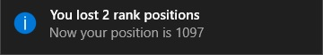
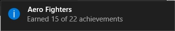

While the Retro Achievements App is open, you will receive notifications for the scenarios:
Rank Changed: Appears when you win or lose positions in the rank.
Achievements Changed: Appears when you lose or win an achievement. (Lost achievements occurs when you reset any achievement in the Retro Achievements website)
